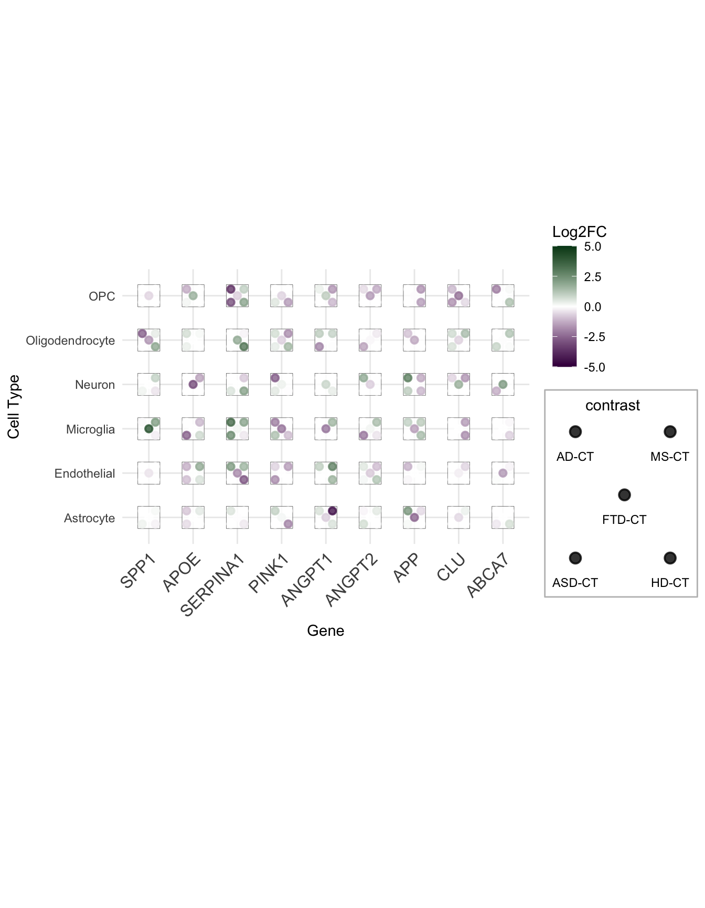
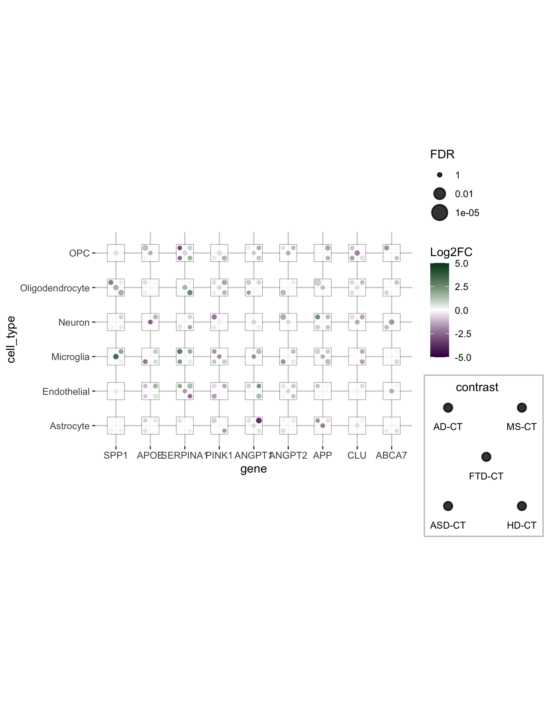
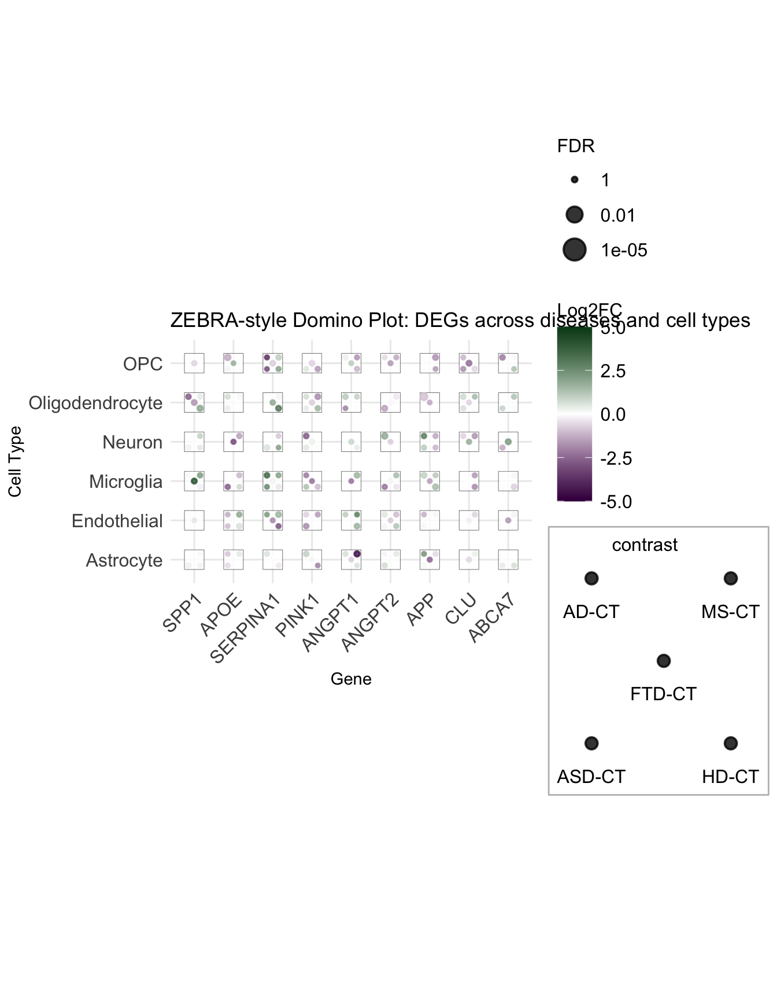

About
This page demonstrates a domino plot — a dice plot where both fill and size aesthetics are mapped to data variables. This encodes two quantitative dimensions (e.g., effect size and significance) on top of the categorical structure of the dice.
The ggdiceplot package is available on CRAN and GitHub.
If you use this package, please cite: Flotho, Flotho & Keller, “DicePlot: a package for high-dimensional categorical data visualization,” Bioinformatics, 2026.
As a teaser, here is the plot we’re going to build:

Packages
Dataset
A domino plot works best with data that has three categorical axes (x, y, and dots) plus one or two quantitative variables (fill and/or size).
Here we simulate a gene expression dataset inspired by the ZEBRA cross-disease analysis, with genes on the x-axis, cell types on the y-axis, and disease contrasts as pip positions:
set.seed(42)
genes <- c("SPP1", "APOE", "SERPINA1", "PINK1", "ANGPT1", "ANGPT2", "APP", "CLU", "ABCA7")
cell_types <- c("Astrocyte", "Microglia", "Neuron", "Oligodendrocyte", "OPC", "Endothelial")
contrasts <- c("AD-CT", "MS-CT", "FTD-CT", "ASD-CT", "HD-CT")
zebra_sim <- expand.grid(
gene = genes,
cell_type = cell_types,
contrast = contrasts,
stringsAsFactors = FALSE
) %>%
mutate(
logFC = rnorm(n(), mean = 0, sd = 1.5),
FDR = runif(n(), min = 1e-6, max = 0.2)
) %>%
# Introduce sparsity: not all genes are significant in all conditions
mutate(
logFC = ifelse(runif(n()) < 0.3, NA_real_, logFC),
FDR = ifelse(is.na(logFC), NA_real_, FDR)
) %>%
mutate(
cell_type = factor(cell_type, levels = sort(cell_types)),
contrast = factor(contrast, levels = contrasts),
gene = factor(gene, levels = genes)
)
head(zebra_sim)Building the domino plot step by step
Step 1: Basic structure with fill only
Start by mapping fill to logFC with a
diverging purple–green gradient. Pips with NA values appear
white (absent from the die face).
lo <- floor(min(zebra_sim$logFC, na.rm = TRUE))
up <- ceiling(max(zebra_sim$logFC, na.rm = TRUE))
mid <- (lo + up) / 2
p <- ggplot(zebra_sim, aes(x = gene, y = cell_type)) +
geom_dice(
aes(dots = contrast, fill = logFC),
na.rm = TRUE,
show.legend = TRUE,
ndots = length(contrasts),
x_length = length(genes),
y_length = length(cell_types)
) +
scale_fill_gradient2(
low = "#40004B", high = "#00441B", mid = "white",
na.value = "white", limit = c(lo, up), midpoint = mid,
name = "Log2FC"
) +
theme_minimal() +
theme(axis.text.x = element_text(angle = 45, hjust = 1, size = 12)) +
labs(x = "Gene", y = "Cell Type")
p
Step 2: Add size for significance
Now map size to -log10(FDR). Larger pips
indicate stronger statistical significance. The combination of color
(effect direction/magnitude) and size (confidence) creates the full
domino plot.
minsize <- floor(min(-log10(zebra_sim$FDR), na.rm = TRUE))
maxsize <- ceiling(max(-log10(zebra_sim$FDR), na.rm = TRUE))
midsize <- ceiling(quantile(-log10(zebra_sim$FDR), 0.5, na.rm = TRUE))
p <- ggplot(zebra_sim, aes(x = gene, y = cell_type)) +
geom_dice(
aes(dots = contrast, fill = logFC, size = -log10(FDR)),
na.rm = TRUE,
show.legend = TRUE,
ndots = length(contrasts),
x_length = length(genes),
y_length = length(cell_types)
) +
scale_fill_gradient2(
low = "#40004B", high = "#00441B", mid = "white",
na.value = "white", limit = c(lo, up), midpoint = mid,
name = "Log2FC"
) +
scale_size_continuous(
limits = c(minsize, maxsize),
breaks = c(minsize, midsize, maxsize),
labels = c(10^minsize, 10^-midsize, 10^-maxsize),
name = "FDR"
)
p
Step 3: Polish the theme
Fine-tune text sizes, legend appearance, and add a descriptive title.
p +
theme_minimal() +
theme(
axis.text.x = element_text(angle = 45, hjust = 1, size = 12),
axis.text.y = element_text(size = 12),
legend.text = element_text(size = 12),
legend.title = element_text(size = 12),
legend.key = element_blank(),
legend.key.size = unit(0.8, "cm")
) +
labs(
x = "Gene",
y = "Cell Type",
title = "ZEBRA-style Domino Plot: DEGs across diseases and cell types"
)
Preparing your own data
To create a domino plot with your own data, ensure the input is in long format with one row per dot:
# Example: reshape wide gene expression results into long format
library(dplyr)
library(tidyr)
my_data <- my_results %>%
# One row per gene x cell_type x contrast
filter(PValue < 0.05) %>%
group_by(gene, cell_type, contrast) %>%
summarise(logFC = mean(logFC), FDR = min(FDR), .groups = "drop") %>%
# Fill in missing combinations with NA
complete(gene, cell_type, contrast,
fill = list(logFC = NA_real_, FDR = NA_real_))The key columns are:
- x and y: grid position variables (e.g., gene, cell_type)
- dots: categorical variable for pip positions (e.g., contrast/disease)
- fill: quantitative or categorical variable for pip color (e.g., logFC)
- size (optional): quantitative variable for pip diameter (e.g., -log10(FDR))